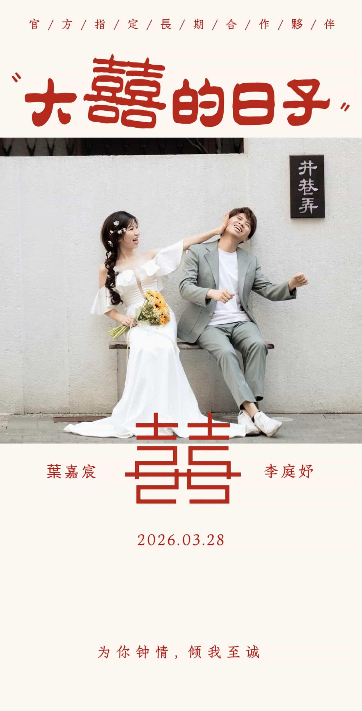

企業客戶
企業客戶
把流量變成生意
一站式服務：網站建置 × 數據追蹤 × 轉換優化 × LINE自動化
從需求釐清到成效驗證，我們是您的數位顧問
⚡
極致速度
靜態網站 + CDN，秒級加載，SEO友善
📊
數據驅動
GA4追蹤 + 漏斗分析，決策有據可依
💬
自動化營銷
LINE Rich Menu + 智能分流，自動回應客戶
我們是誰？
我們是數位轉型落地團隊，專注把「網站、流程、LINE 自動化」整合成可執行的成長系統，從規劃到陪跑，讓成果可被複製。

流程先行，陪跑落地，讓轉型不只停在提案
我們以一套可執行流程推進每個專案：需求盤點 → 方案設計 → 上線驗證 → 數據優化，確保每個階段都有清楚交付物。
除了交付網站，我們更提供轉型陪跑節奏與 LINE 自動化試用方案，先小規模驗證，再逐步擴大到完整營運流程。
流程化交付
需求盤點、頁面架構、事件追蹤、上線驗收，一步一步可追蹤
轉型陪跑
每週小迭代回顧成效，持續優化流程與轉換節點
LINE 自動化試用方案
先試用分流與問答腳本，再依實際成效擴充正式自動化模組
Transformation Cases
轉型案例分享
依照不同轉型目標整理案例，從品牌網站升級到 LINE 流程自動化，快速掌握可直接套用的做法。
顯示 6 / 6 個案例
企業客戶
 個人品牌
個人品牌

婚禮客製婚禮電子邀請函（Wedding Invitation）
6 頁故事動線 + 婚宴資訊集中，讓賓客更快理解流程並提升參與感。
新人回饋：「原本以為只是喜帖頁面，現場留言輪播讓全場都參與進來。」
👉 點我看 demo 範例 LINE 自動化
LINE 自動化
 LINE 自動化
LINE 自動化
 活動推廣
活動推廣
目前此分類暫無案例，請切換其他篩選條件。
五大專業範本
每個範本都經過精心設計，滿足不同產業需求。
點擊「試用預覽」即時客製化顏色、文案、圖片——無需編碼。
{{ template.name }}
{{ template.keywords }}
立即開始試用
點擊上方任一範本，下方即可看到「試用預覽」。預覽支援響應式檢視（手機 / 平板 / 桌機），幫助您直觀理解該範本的設計樣式。
{{ currentTemplate.name }} - 即時預覽
以下為「{{ currentTemplate.name }}」範本的動態預覽。您可以選擇不同的檢視模式，查看在各裝置上的顯示效果。
{{ visibleSections.hero.title }}
{{ visibleSections.hero.text }}
{{ visibleSections.about.title }}
{{ visibleSections.about.text }}
{{ visibleSections.services.title }}
服務項目 {{i}}
這裡是服務的簡短描述。
{{ visibleSections.team.title }}
團隊成員 {{i}}
成員職稱
{{ visibleSections.testimonials.title }}
客戶名稱 {{i}}
客戶職稱
"{{ visibleSections.testimonials.text }}"
{{ visibleSections.gallery.title }}
{{ visibleSections.about_me.title }}
{{ visibleSections.about_me.text }}
{{ visibleSections.skills.title }}
{{ visibleSections.skills.text }}
技能 {{i}}
{{ visibleSections.offer_details.title }}
{{ visibleSections.offer_details.text }}
{{ visibleSections.how_it_works.title }}
步驟 {{i}}
{{ ['選擇數量', '邀請好友', '坐等收貨'][i-1] }}
{{ visibleSections.countdown.title }}
{{ visibleSections.countdown.text }}
此為靜態示意，實際倒數計時功能需額外開發。
{{ visibleSections.call_to_action.title }}
{{ visibleSections.call_to_action.text }}
{{ visibleSections.agenda.title }}
{{ visibleSections.agenda.text }}
{{ visibleSections.speakers.title }}
講者姓名 {{i}}
講者職稱
{{ visibleSections.sponsors.title }}
{{ visibleSections.location.title }}
{{ visibleSections.location.text }}
地圖預覽區塊
{{ visibleSections.featured_post.title }}
{{ visibleSections.featured_post.text }}
繼續閱讀 →{{ visibleSections.posts.title }}
文章標題 {{ i }}
發布日期: 2025-06-1{{5-i}}
{{ visibleSections.about.title }}
{{ visibleSections.about.text }}
{{ visibleSections.subscribe.title }}
{{ visibleSections.subscribe.text }}
我們的三層服務
1
快速建站
選擇既有範本快速上線，適合急需展示的需求
NT$6,000
起
2
客製化方案
根據品牌打造獨特視覺 + 完整功能 + GA 追蹤
NT$25,000
起
推薦方案
3
顧問級服務
系統開發 + 行銷自動化 + 長期陪伴 + 數據優化
客製報價
依需求
自動化方案設計 × 轉型陪跑方案
不做冗長規劃，直接聚焦「流程效率」與「落地執行」，把可重複的工作交給系統。
自動化方案設計
盤點現有流程後，優先把「詢問分流、表單通知、名單標記、提醒追蹤」自動化，降低人工作業與漏接風險。
- 適用情境：LINE 諮詢、預約流程、潛在客戶培養
- 交付重點：流程圖、事件定義、上線設定清單
轉型陪跑方案
以短週期陪跑方式，協助團隊從「能用」走到「穩定可複製」，每週聚焦一個可驗證目標並快速迭代。
- 陪跑節奏：需求拆解 → 實作上線 → 成效回顧
- 成功指標：回覆速度、轉換率、團隊可獨立操作
30 分鐘免費顧問諮詢
把流量變名單，把名單變成交
一頁式網站 × SEO × GA 事件追蹤 × LINE 行銷自動化
我們專注在「可追蹤、可導流、可擴充」的解決方案。
我們會協助你
釐清真正的需求
你要的是曝光、詢問、報名，還是成交。
並建議
合適的實作方式
模板、客製，或需要系統支援。
同時規劃
追蹤與轉換指標
GA / LINE 事件，讓效果可被驗證。
本頁案例與流程為 DEMO 展示，用於說明可交付的功能與流程設計。